by Ray Maybury 13/12/05
Symptoms: clutch slipping at high revs.
Firstly the parts needed, cover gasket, clutch spring (dished washer), and clutch plates
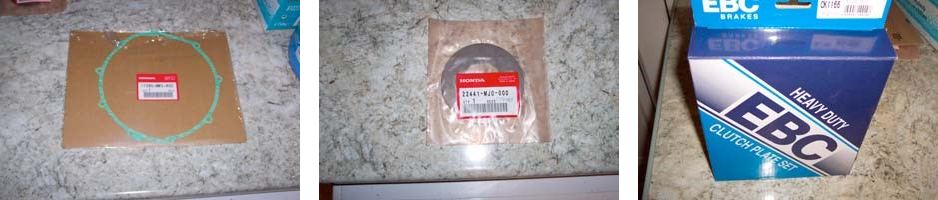
Next, remove your engine oil and change your filter. Put all your drain plugs back and tighten them up
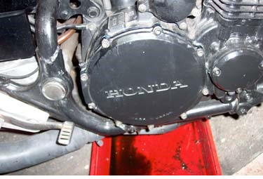 |
Unscrew the 9 Allen-head screws and gently remove the cover. Note the word gently, this is aluminium. Resist the urge to prise or chisel them apart. A 5mm hex bit and a long Tommy bar make life easier. |
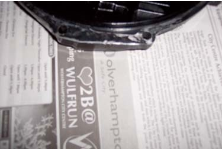 |
Remove the old gasket by using a blade and carefully scraping the two surfaces. Take your time and get the surfaces nice and flat. |
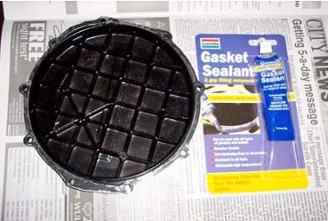 |
All gone! Now apply a thin smear of gasket jointing compound to the cover face and align the new gasket to the holes. |
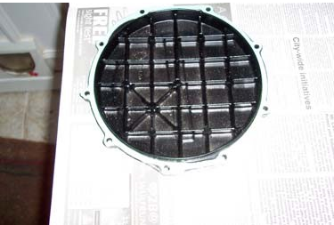 |
Gasket fitted to cover |
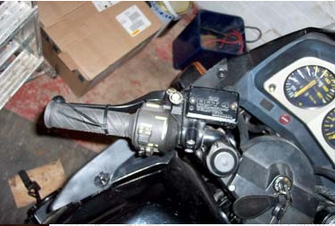 |
Pull your clutch lever in and tie it to the handlebars. |
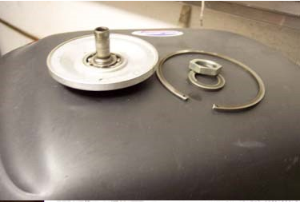 |
Remove the circlip and remove the lifter plate and lifter rod & bearing. Next, put the bike in gear on the side stand and undo the centre nut using a 27mm socket |
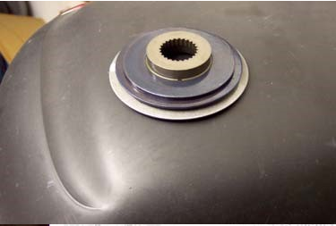 |
Remove the clutch spring (the domed disc) and flat washers. The Honda manual gets horribly confusing just here, so keep these parts in the right order. The clutch spring has a white blob of paint on the outwards face |
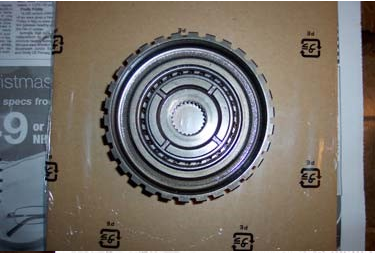 |
Remove the clutch centre and one-way clutch. Check its one-way operation |
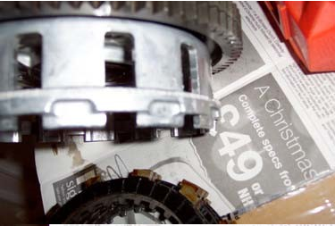 |
Carefully remove the Clutch outer and inner bearing. Note the spacer washer. Check the clutch outer for groves where the clutch plates sit and dress them with a flat, fine file. Needless to say, wash it all off with diesel or petrol and dry off. This will ensure that your clutch has a nice smooth feel to it and each plate does an equal job. |
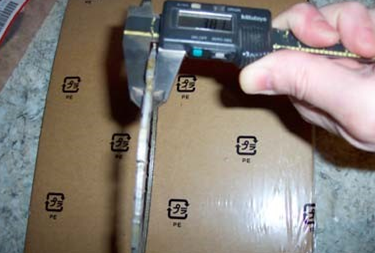 |
The wear limit of the clutch plates is 3.1mm, but if the plates look smooth & burnt then change them anyway. The new plates (being measured here were just over 3.8mm and on six plates that all adds up. |
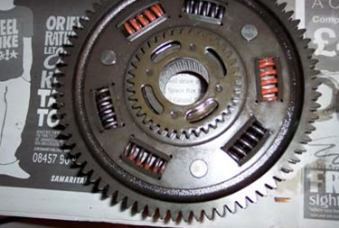 |
Fit your clutch outer (shown here from the rear), this needs to engage with 4 spigots on the gear (shown in the middle). This is difficult to do, so slide the gear off the shaft and fit it to the back of the clutch outer. Fit the clutch outer complete with the gear in position and slide the central bearing into position. |
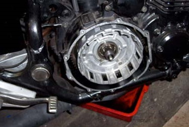 |
When the clutch outer is fitted correctly the outermost edge of the clutch outer will be below the gasket face. |
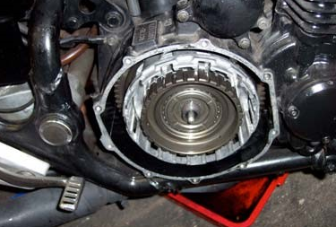 |
Add the clutch centre and one way clutch into position. |
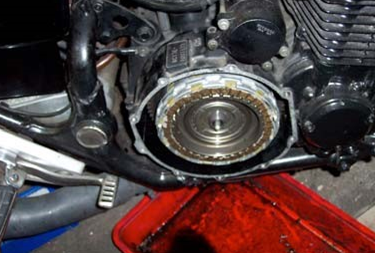 |
Fit the 6 new plates and 5 discs. (A plate at either end), oiling each one as you assemble them. |
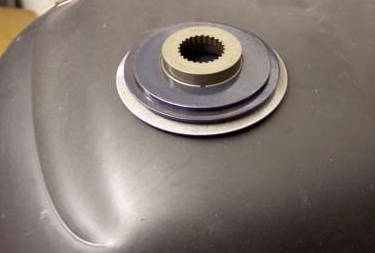 |
Fit the cover plate complete with lifter rod and bearing. |
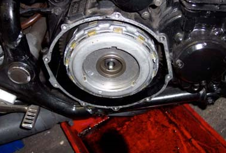 |
Apply Threadlock to the nut and thread and torque the nut down to 75-85Nm (54-61ft/lb). |
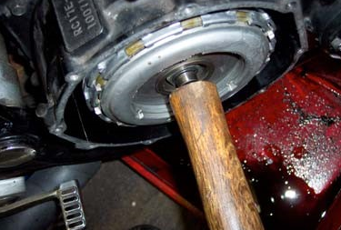 |
Release the tie from the clutch lever and apply a force to the pushrod with a piece of wood (such as the stale of a hammer). This will reset the position and return any fluid to the reservoir. |
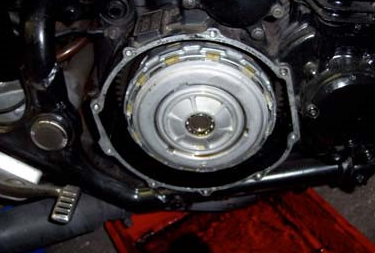 |
Fit clutch lifter plate, pushrod and circlip. Try out the clutch from the lever. It should operate smoothly all the way and you should see the clutch spring moving as you pull on the lever. If your clutch lever only gets half way before coming to a dead stop, you have fitted the spring the wrong way round. (The spring should dome-out not dish-inward). |
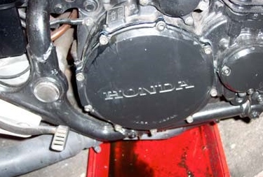 |
Apply a light smear of jointing compound to the casing and fit the cover back in position.
|